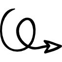
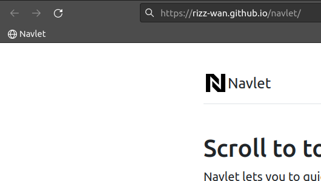

Scroll to top with ease, well, bottom too
Navlet lets you to quickly add a scroll to top, and bottom button to any webpage for better and faster scrolling. Drag the Navlet to your Bookmarks Bar to quickly add buttons on any webpage you visit with just a single click.

Navlet
If you can't see the Bookmarks Bar, Choose "Show Bookmarks Bar" from the View menu.
Awesome!
After you drag the button to the Bookmarks Bar, it will look something like this.
Little more
Read more detailed instructions and documentation on using or contributing to Navlet.
View navlet on GitHub Download .zip Download .tar.gzFork me on Github Create a pull request
Log an issue